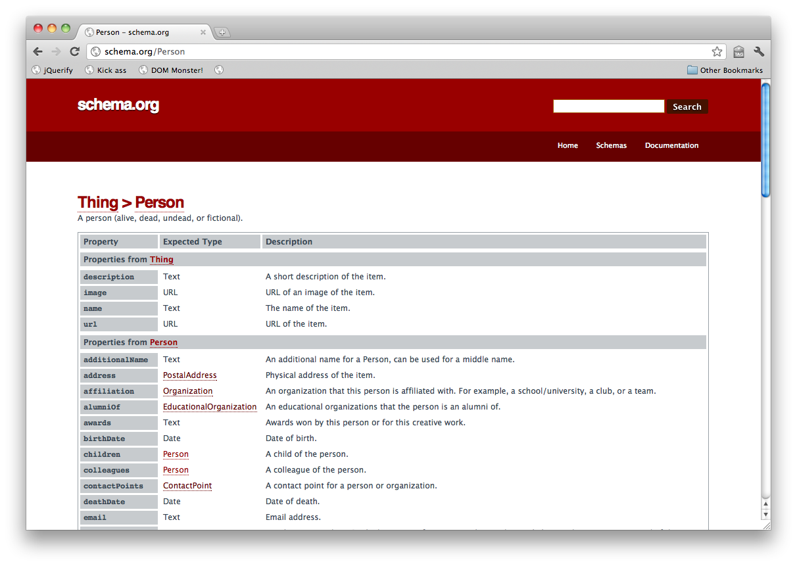
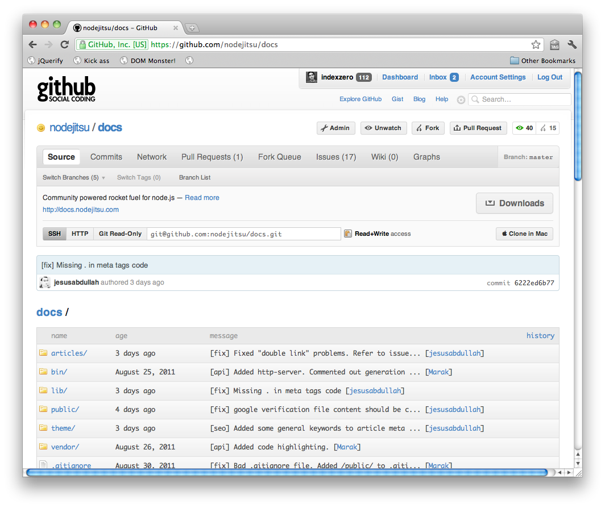

require('you').know(this) === true;
-
Node.js is server-side Javascript.
-
Node.js is asychronous evented I/O.
-
Node.js is very light-weight.
-
Node.js is a young project (~2.5 years)
require('development-focus');
-
Speed.
-
Decoupled kernels of functionality.
-
Experimentation.
-
Client-Server Isomorphism.
require('users').filter(notable);
-
Yahoo.
-
Github.
-
LinkedIn.
-
...and more I can't say.
require('innovation');
-
socket.io http://github.com/learnboost/socket.io
Multi-transport (websocket, flash, xhr) full-duplex socket support backwards-compatible to IE6.
-
node-http-proxy http://github.com/nodejitsu/node-http-proxy
RFC2616-compliant reverse proxy supporting SSL, websockets and vhosts. Competitive speed with 1/10th the code of squid, haproxy, or nginx.
-
browserify http://github.com/substack/browserify
Seemless browser-side require() for raw JS and npm modules. (Dual-sided script loaders anyone?)
-
jsdom http://github.com/tmpvar/jsdom
A pure Javascript implementation of the W3C DOM.
-
hook.io http://github.com/hookio/hook.io
A universal event bus and process supervision tree with browser-support. Think: Erlang process model in Javascript at the application-level.
require('code-sample');

require('code-sample');
var jsdom = require('jsdom'),
request = require('request');
request({ uri: url }, function (err, response, body) {
if (err && response.statusCode !== 200) {
console.log('Error when contacting: ' + url);
return callback(err);
}
//
// Parse the resulting HTML using jQuery
//
jsdom.env({
html: body,
scripts: [
'http://code.jquery.com/jquery-1.5.min.js'
]
}, function (err, window) {
var $ = window.jQuery,
schema = { type: type };
//
// Hardcore parsing logic is here:
// http://github.com/indexzero/node-schema-org
//
});
});
require('code-sample');
//
// https://gist.github.com/869781
//
var httpProxy = require('http-proxy');
//
// Addresses to use in the round robin proxy
//
var addresses = [
{
host: 'ws1.0.0.0',
port: 80
},
{
host: 'ws2.0.0.0',
port: 80
}
];
httpProxy.createServer(function (req, res, proxy) {
//
// Get the first location off of the 'queue'.
//
var target = addresses.shift();
//
// Proxy to the specified location
//
proxy.proxyRequest(req, res, target);
//
// Push the location to the end of the 'queue'.
//
addresses.push(target);
});
require('advantages');
-
No pre-defined rules.
-
Tons of libraries.
-
High visibility.
require('disadvantages');
-
No pre-defined rules.
-
Tons of libraries.
-
Everyone has an opinion.
-
User-land is still maturing.
require('now-what');
You are probably wondering how to bring Node.js into your organization. Although Node.js is a new technology the approach to implementation and adoption stay relatively the same.
-
Just another web service.
-
Real-time enhancements?
-
Mobile?
-
Any DIRT lying around?
require('contribute');

require('questions').ask(Date.now);
require('open-source')
This presentation is Open Source software.
-
All software is available under the MIT license.
-
All content is available under Creative Commons Share-Alike no-attribution commercial ok.
-
Special thanks to Deck.js for making a killer open-source front-end: http://imakewebthings.github.com/deck.js
←
→
/
#